Electrical Symbols
Electrical symbols are standardized graphical representations used to denote electrical components in diagrams and drawings. They simplify the understanding of complex electrical circuits by providing a universal visual language. Common symbols represent components such as resistors, capacitors, switches, relays, motors, transformers, circuit breakers, fuses, sensors, and grounding points. Standardized symbols help engineers, technicians, and electricians correctly interpret circuit designs and ensure consistency across documentation.
What is an electrical schematic?
An electrical schematic is a simplified drawing that shows how electrical components are connected and how a circuit works. It uses standard symbols instead of realistic pictures so engineers, electricians, and technicians all read it the same way.
Common Electrical Symbols
- Power & Ground
- Battery: long and short parallel lines
- AC source: circle with a sine wave (~)
- Ground (earth): three descending horizontal lines
- Chassis ground: angled lines under a point
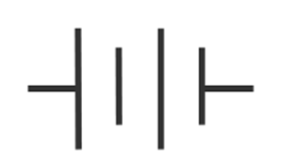

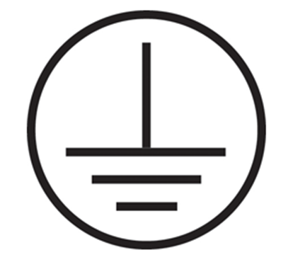

- Passive Components
- Resistor: zigzag line (US) or rectangle (IEC)
- Variable resistor / Potentiometer: resistor with an arrow
- Capacitor:
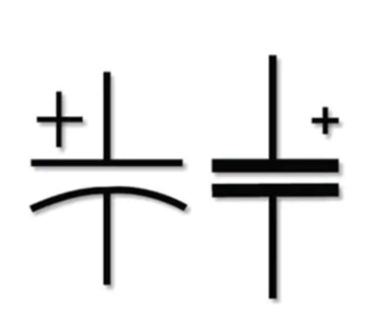
- Non-polarized: two equal parallel lines
- Polarized: one straight line, one curved
- Inductor: coiled loops
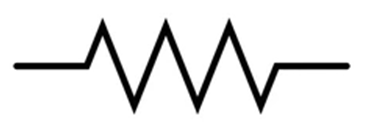

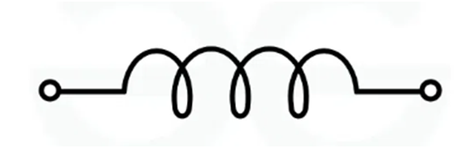
- Switches & Protection
- Switch (SPST): break in a line with a lever
- Push button: momentary switch symbol
- Fuse: small rectangle or curved line
- Circuit breaker: switch-like with protection marking
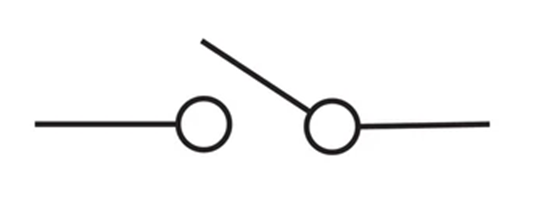

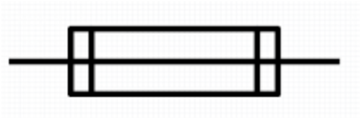

- Active Components
- Diode: Triangle pointing to a line
- LED: Diode with arrows pointing outward
- Transistor (BJT): NPN or PNP with arrow
- Operational amplifier (Op-Amp): Triangle with + and - inputs
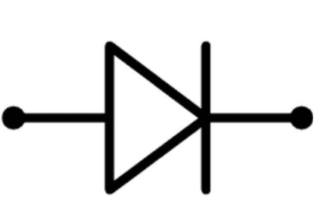
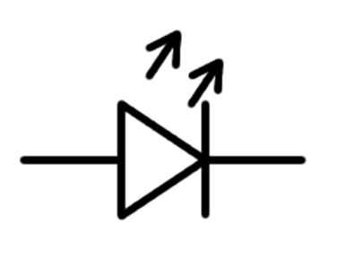
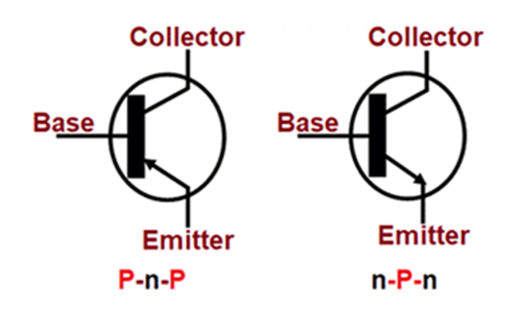

- Loads & Outputs
- Lamp/ Bulb: Circle with filament cross
- Motor: Circle with “M”
- Relay: Coil symbol + switch contacts
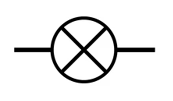
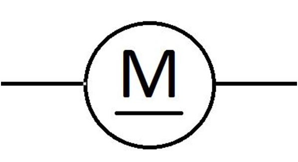
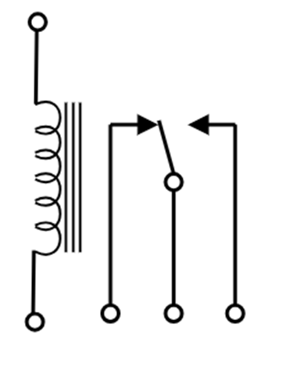